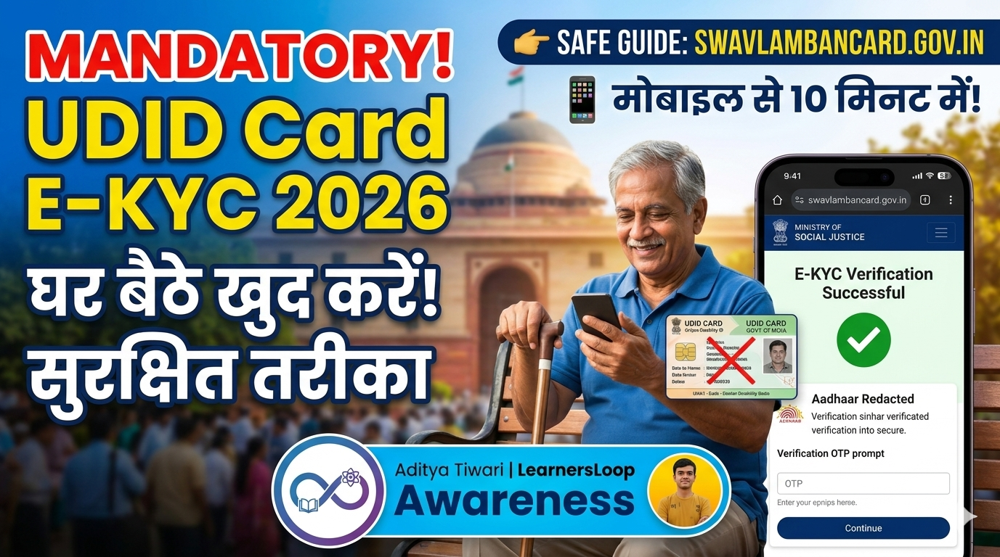

Important Information: Mandatory E-KYC Update for UDID Card

Dear Friends,
As you all know, E-KYC has been made strictly mandatory by the government for the Unique Disability (UDID) Card. If you haven't completed your E-KYC yet, your card could be deactivated, which may put a stop to your government benefits and access to various welfare schemes.
⚠️ Stay Alert: Ever since this update was made mandatory, many bad actors have started charging heavy amounts for this service or are asking you to share your sensitive personal data. Some are even offering to do it for free just to collect your personal documents. Never share your sensitive government documents or OTPs with anyone. In this digital era, protecting your personal information is entirely your responsibility.
That’s why we are sharing this updated, comprehensive guide on LearnersLoop so that you can complete your own UDID E-KYC from your mobile, laptop, or computer—safely, securely, and without depending on anyone else.
Step-by-Step Guide to Complete UDID E-KYC
-
Go to the Official Website:
Open your web browser and visit only the official government portal:
https://swavlambancard.gov.in/ -
Login Process:
On the homepage, look for and click on the “PWD Login” button. -
Enter Your Details:
You will find three main input boxes on the login page:- First box: Enter your UDID Card Number or Enrollment Number.
- Second box: Enter your Date of Birth (exactly as printed on your UDID card).
- Third box: Solve the Captcha Code (a small text or simple visual query) and type it into the box.
-
Click Login:
After filling in all three fields accurately, click the "Login" button below. -
Navigate to E-KYC Option:
Once your dashboard opens (if you use a screen reader or TalkBack, simply swipe through the interface), navigate to the option titled “Update e-KYC” and click it. -
Verify Identity Details:
Your linked government identification number ([Aadhaar Redacted]) will be partially displayed on the screen. Verify your identity details carefully to ensure they match. -
Grant Verification Permission:
Tick the checkbox on the screen to give your consent for official verification. This is entirely safe as it is processed directly through the official government servers. -
Generate OTP:
Now, click on the “Generate OTP” button. -
Enter the Verification Code:
A secure 6-digit OTP will be sent to your registered mobile number. Carefully enter it into the designated box and click "Verify". -
Successful Update:
Once successfully verified, a success message will appear on your screen confirming that your E-KYC status has been updated. -
Download Your New Card:
Finally, go back to your main dashboard and click “Download UDID Card” to save your newly updated digital card securely on your device.
Need Technical Help?
If you face any technical difficulties, bugs, or accessibility challenges during this process, feel free to reach out to me directly for support. Just send me this exact message on WhatsApp:
"I want to complete E-KYC of my UDID card"
Contact on WhatsApp⚠️ Please avoid sending unnecessary or unrelated messages so that I can assist those who genuinely need help on time.

🔐 Final Note: The goal of this article is not to oppose those who provide assistance, but rather to promote digital literacy and self-reliance among our community. Your documents and your digital security are your own responsibility. Stay alert, and stay protected against online scams!